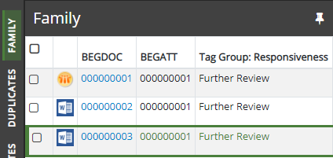
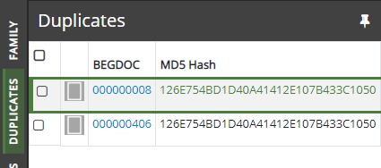

Relationships are based on the content of a specific
field. When users select a particular record and view relationship details
in
Family: intended to show documents that are related to one another, as in an email and its attachment. Family relationships are grouped by the BEGATTACH field and sorted by the BEGDOC field; you can define the details (fields and/or tag groups) to be included in the list.
Duplicates: intended to show documents that are the same in content. Duplicates are grouped by the MD5HASH field and sorted by the BEGDOC field; you can define the details (fields and/or tag groups) to be included in the list
Near Duplicates: intended to show documents that are nearly the same in content. Duplicates are grouped by the MD5HASH field and sorted by the BEGDOC field; you can define the details (fields and/or tag groups) to be included in the list
Email Thread: displays relationships among a family of email headers to be identified, based on their content and associated metadata. A combination of email headers and email body content is used to determine when emails belong in the same thread.
Document History: displays history of actions such as redactions and tags applied to the selected document. Although not modifiable, this report can be secured.
This figure shows the Family
relationship in

In addition to the BEGDOC field, two tag groups (Responsiveness and Privileged) have been added by the administrator.
Another default relationship is the duplicates relationship
for cases using an MD5Hash field. The following figure shows this relationship
in
In this example, the administrator has included the document compare tool (as indicated by the magnifying glass button). This tool allows users to compare a document selected in the Documents (or Search Results, etc.) tab to one in the Relationships list.

Before defining a relationship, plan the type of information that will assist your users as they review case details, including the field upon which each relationship should be based, the field and tag details that should be displayed in the Relationships listing, and how the information should be sorted.
Related Topics